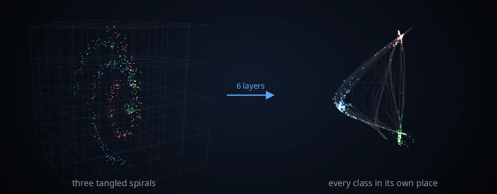
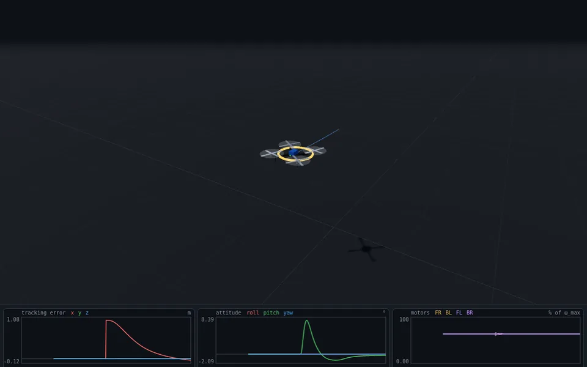
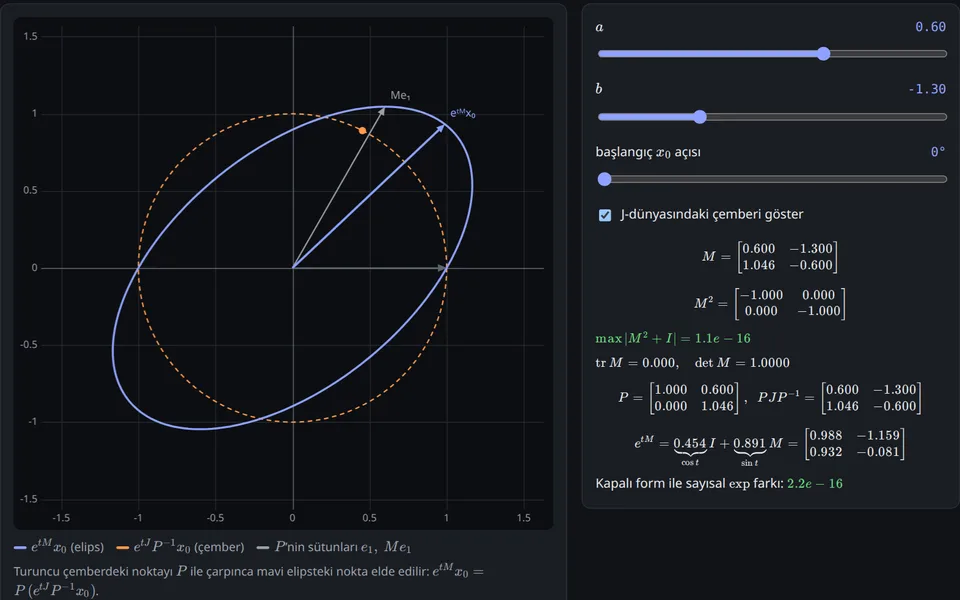
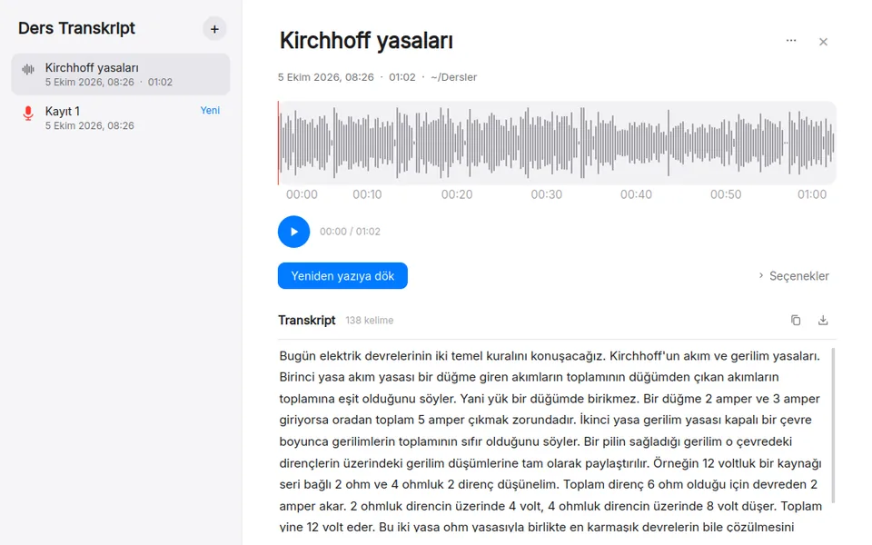

Neural Nets Space Bending
Watch a small neural network bend, stretch and fold space layer by layer while it trains — in 2D and 3D, with every layer open to inspection.
I build interactive tools that make engineering visible — neural networks, flight control and signals, running in the browser or on your own computer.

Watch a small neural network bend, stretch and fold space layer by layer while it trains — in 2D and 3D, with every layer open to inspection.

Design and tune a cascaded PID controller for a quadrotor and read its step response live.

Engineering math you can move: every topic pairs a live visualization with a step-by-step derivation from first principles.

Offline lecture transcription with Whisper. No audio leaves the computer.
Control engineering, machine learning and signal processing — especially where something has to be explained, not only built.